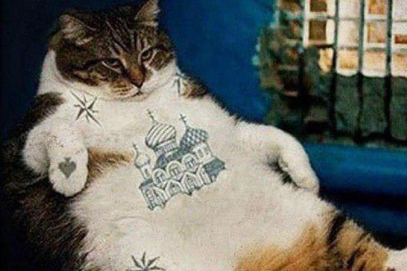

Я устал че та, но это часть про картинки и ссылки(скоро в эмонг ас играть)
Я уже фиг знает сколько сижу и только щас понял, что я чет туплю, надо было на разных страницах все делать, чтобы ссылки практиковать, лан, я даун)))
Так, ссылка добавляется тегом <a> и обязательно имеется атрибут href, который задает адрес ссылки.<a href="https://htmlacademy.ru">HTML Academy</a>
Это ссылка на вторую страницу, просто так
Есть относительные адреса, с твоего компа, а есть абсолютные, в огромном интернете
Ссылки-якоря это штуки, чтобы из навигации например прыгать на какой либо пункт. Я так сделаю, обещаю.
Тег <img> отвечает за добавление картиночек. Сам по себе тег бесполезен без своего атрибута src, который указывает путь к картинке.
<img src="kotik.png">
Можно добавлять несколько типов картиночек.
- SVG
Подходит, если:
- необходимо масштабировать изображение без потерь
- изменять цвет элементов изображения
- нужно анимировать части изображения
- JPEG
Подходит для:
- полноцветных изображений, фотографий
- изображений с плавным переходом яркости и контраста
- рисунков с большим количеством разноцветных деталей

- PNG
Подходит для:
- изображений с прозрачностью и полупрозрачностью
- полноцветных изображений, когда необходима повышенная точность
- изображений с резкими переходами цветов
- GIF
Подходит если:
- нужна простейшая анимация

Нажмите на кота, по очереди с гифки, до первого
Фух, это было муторно, но осталось еще кое-что, что я изучил сегодня, размеры изображения. Они редактируются тегами <width>(ширина) и <height>(высота)
Например:
<img src="logo.png" width="200" height="100">
Надо еще картиночку добавить.
ВСЕ ЭТИ ЗАПИСИ БЫЛИ СДЕЛАНЫ ВРОДЕ В .
Сегодня , я исправил всякие штуки, добавил ссылку, картинки, зачеркнул некоторое и
поменял некоторые теги <p> на <br>.
Я уже не очень помню, когда я точно начал учить, но по-моему пока что неделая прошла, CSS я толком не трогал еще.
Четверг, вечер, закончил главу ссылки и изображения, сейчас дополню тут все.
АТРИБУТ <alt>, необходим для того, чтобы была хоть какая-то надпись на месте картинки, если она не загрузилась, добавил к своим.<img src="2GU.gif" alt="Котик классно машет лапками)">
Чтобы забацать изображение-ссылку надо сделать так
<a href="gifkot.html">
<img src="2GU.gif" alt="Котик классно машет лапками)">
</a>
При удалении такого материала основное содержание не должно пострадать, иначе это не дополнительный материал и тег <figure> не подходит для его разметки.
Обычно в дополнении к этому тегу, добавляют <figcaption>,
он нужен чтобы просто добавить описание.
Если например, человек перешел по ссылке на фоточки, и он находится на первой, то кнопку Назад можно сделать пустой ссылкой(необязательно назад, хоть где крч).<a>Назад</a>
Кто убил Кеннеди?
А, забыл. Чтобы сделать ссылку на файл, не прочтение его, а именно скачку(пдф, ворд), надо добавить атрибут download<a href="files/homework.pdf">Скачать<a>
Ссылки и изображения